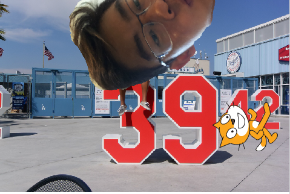
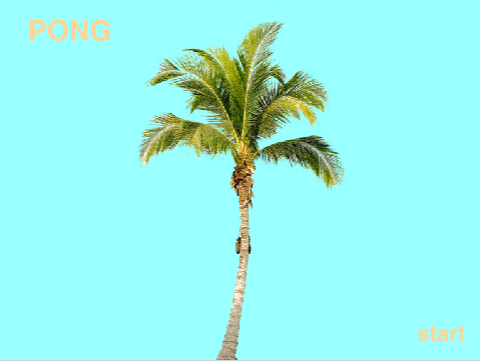
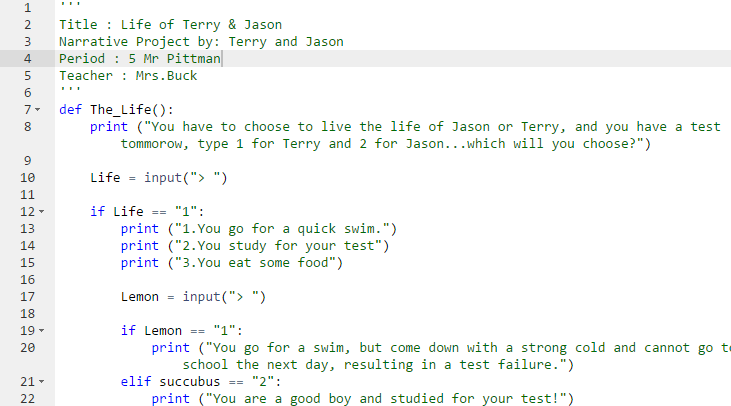

Scratch Project
Hello! If you are reading this you have found my first Scratch Project!.
This is when I had just started to play around with Scratch so it might be a little bit messy!
Click on my head to check out my starting project!

Scratch Beach Pong Remix
This is my second Scratch Project! This is a remix of the well-known game pong with the addition of some fancy music and beautiful backdrop. Hope you enjoy it!
Click on the picture of the palm tree to check out my awesome project!
The backlog for this project can be found below.

Pong Beach Remix Backlog
Python Interactive English Project
This picture of my python project will take you to code that me and my partner, Jason Diaz have cooked up!
This project is really fun and interactive, so you should click on it and check it out!
The link to the flow chart for this python project can be accessed below.

Python Project Flow Chart